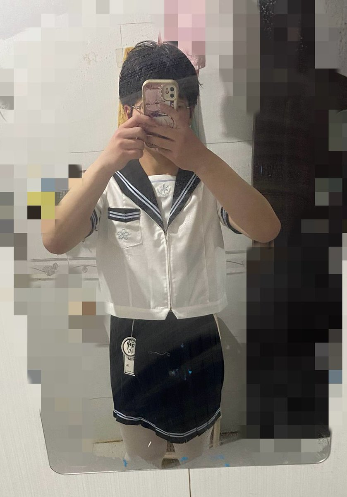

洛铃
@LolingVerse
@_blueberrysauce

=湍月鏡像虛幻天使×
@tuanyuehuan
被化学摧残再也回不去了😭
孩子们千万不要碰这门学科啊，去学计算机吧（） https://t.co/eCo6V9JlIr
小小菠萝包🍥
@_blueberrysauce
今天化竞决赛 打算穿裙子去 给我的同期们一点小小的yn震撼😋
初赛的时候已经带着蓝白粉和🍥给同学一点跨性别震撼🤓（指以学校初赛第一的身份拿的决赛名额
（但这只是省级竞赛🫠得奖也没什么用QAQ… https://t.co/7hLR7BHwDy